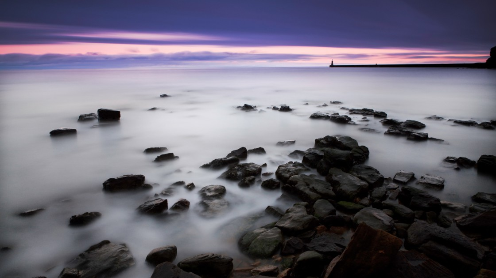
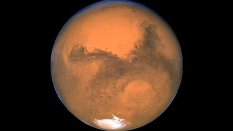
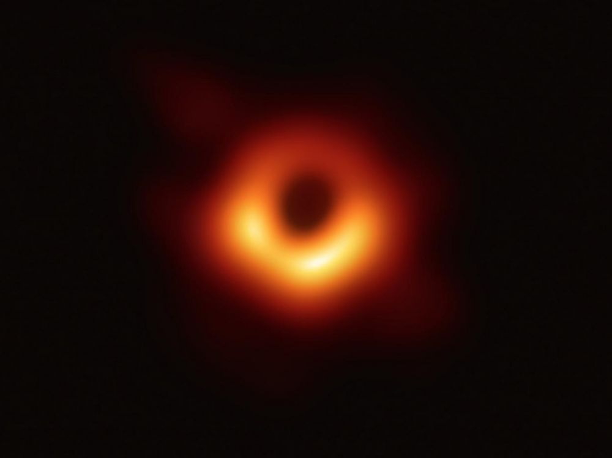

| Nom |
Description |
image |
| image1 |
Le format paysage et le format portrait sont les deux formats de base en photographie. Focus sur ce qui définit le format paysage, aussi appelé format horizontal. |
 |
| image2 |
Le robot InSight a détecté de nombreuses données sur la planète rouge grâce à son sismographe.
En quinze mois de présence sur Mars, le robot InSight et son sismographe ont déjà détecté près de 500 frémissements des entrailles de la planète rouge, une récolte abondante qui livre le portrait d'une "planète vivante", secouée par de nombreux séismes. "C'est toujours émouvant d'imaginer cet instrument sur Mars qui nous envoie ces données", confie Philippe Lognonné, chercheur de l'Institut de Physique du Globe de Paris et père de SEIS, le sismographe français embarqué par InSight. |
 |
| image3 |
Original caption — The Aleutian Islands and the Alaskan peninsula are shown in this image acquired by the MODIS on the Terra satellite, on May 25th, 2006. The Aleutians are a chain of more than 300 small volcanic islands forming an island arc in the Northern Pacific Ocean. They extend about 1,200 miles westward from the Alaskan Peninsula. Nearly all of the islands are part of Alaska, but at the extreme western end of the archipelago are the small, geologically-related, but remote Komandorski Islands, which are considered part of Russia. The Aleutian Islands, with 57 volcanoes among them, are in the northern part of the Pacific Ring of Fire. |
 |
image4 |
Pour la première fois une équipe internationale d’astrophysiciens a réussi à obtenir une photo d’un trou noir supermassif M87*, au cœur de la galaxie M87! Une première rendue possible grâce à un télescope d’un genre nouveau, l’Event Horizon Télescope. |
 |